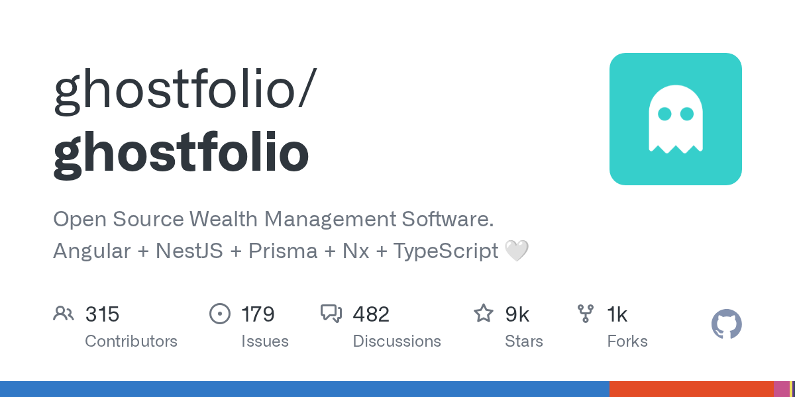

06 GitHub
ghostfolio/ghostfolio
흩어진 투자 내역을 한 화면에 모으는 자산관리 웹앱
★ 9,382이번 주 +47TypeScriptAGPL-3.0 법무 확인릴리스 3.75.0 (09.28)최근 활동 09.29테스트 있음예제 없음AGENTS.md 없음

이 저장소는 개인 투자 내역을 웹에서 관리하는 도구다. 만든 쪽은 바쁜 사용자가 주식, ETF, 가상자산을 추적하고 데이터에 근거해 판단하도록 돕는다고 밝혔다. 공식 클라우드 상품도 있고, 직접 서버에 설치해 쓸 수도 있다. 이번 주에는 3.75.0 버전이 나왔다.
무엇을 하는 물건인가
이 도구는 여러 곳에 흩어진 투자 거래를 한곳에 모아 보는 자산관리 웹앱이다. 보유 종목 비중과 수익률, 위험 신호를 화면으로 보여준다. 이 도구가 없으면 거래 내역을 각 증권사 화면과 스프레드시트에 나눠 적어야 한다. 가계부를 손으로 합산하던 일을 자동 가계부로 바꾸는 모습에 가깝다.
스펙과 도입 조건
- 언어는 TypeScript다.
- 백엔드는 NestJS 기반이며 데이터베이스는 PostgreSQL을 쓴다.
- Prisma를 사용하고 Redis를 캐시로 쓴다.
- 프론트엔드는 Angular와 Angular Material 기반이다.
- 공식 Docker 이미지가 있다.
- 설치 형태는 Docker Compose 기준으로 안내돼 있다.
- linux/amd64, linux/arm/v7, linux/arm64 이미지를 제공한다.
- 외부 API 키는 CoinGecko Demo 또는 Pro 키를 선택해 넣을 수 있다.
- 라이선스는 AGPL-3.0이다.
- 최신 릴리스는 3.75.0이며 2026-09-28에 공개됐다.
이럴 때 쓰면 좋다
- 임직원이 여러 증권사 계좌에 흩어 둔 투자 내역을 한 화면에서 보고 월간 수익률을 확인할 때 쓰기 좋다.
- 재무나 복지 담당 부서가 사내 투자 교육용 예시 화면을 만들고 자산 배분 개념을 설명할 때 참고하기 좋다.
- API로 거래 내역을 들여오고 내보내는 구조를 살펴보며 고객 자산 조회 서비스의 기본 흐름을 검토할 때 도움이 된다.
핵심 기능
- 거래 내역을 생성, 수정, 삭제할 수 있다.
- 여러 계정을 함께 관리할 수 있다.
- 오늘, 이번 주, 이번 달, 연초 이후, 1년, 5년, 전체 기준 수익률과 차트를 보여준다.
이번 릴리스에서 바뀐 점
이번 저장소 설명에는 3.75.0 버전 번호와 공개 날짜는 적혀 있다. 다만 새 기능, 호환성 변경, 삭제된 기능은 따로 정리돼 있지 않다. 업그레이드 절차는 Docker 이미지 버전을 올린 뒤 재시작하면 컨테이너가 시작할 때 필요한 데이터베이스 스키마 마이그레이션schema migration — 데이터베이스 구조를 버전에 맞게 바꾸는 작업을 자동 적용하는 방식이다. 운영 중인 환경이라면 재시작 시점과 데이터베이스 변경 반영 여부를 먼저 점검해야 한다.
사내 도입 체크
- Public API가 있고 Bearer Token으로 인증한다.
- MCPModel Context Protocol — AI 도구가 외부 시스템과 연결할 때 쓰는 규약 서버 기능은 실험 단계이며 기본값은 비활성이다.
- MCP 접근은 금액 값을 읽지 않도록 제한된 읽기 권한을 둔다.
- 유지보수 주체는 개인 프로젝트라기보다 Ghostfolio 이름의 조직형 서비스로 보이지만 법적 운영 주체는 확인 필요다.
- 공식 클라우드 상품인 Ghostfolio Premium이 있어 자체 구축 대신 상용형 대안을 바로 고를 수 있다.
원문 정보
제목: ghostfolio/ghostfolio
최근 활동: 2026.09.29